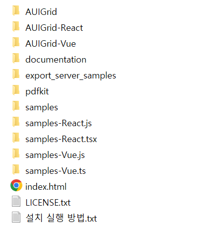

AUIGrid 는 순수 자바스크립트, HTML, CSS 로 제작된 클라이언트 사이드 데이터그리드입니다. 따라서 WAS 에 따로 특별한 설치는 필요 없습니다.
WAS 로 톰캣, Jeus, Resin, IIS, WebLogic 등 어떤 것을 사용해도 무관합니다.
웹 서버에 FTP 로 업로드하여 주십시오. 이것으로 모든 설치는 완료됩니다.
https://www.auisoft.net 에서 다운로드를 받아 압축을 해제하면 다음과 같은 폴더구조가 보입니다.
|
 |
이 파일 그대로 FTP 를 통해 원하는 웹 서버에 올려주십시오.
디렉토리 설명
* AUIGrid : AUIGrid 라이브러리와 스타일(css) 가 있는 디렉토리입니다. 실제로 AUIGrid 를 사용할 때 이 디렉토리만 복사해서 사용하십시오.
* AUIGrid-React : AUIGrid 를 React.js 라이브러리에서 사용토록 작성된 서브 컴포넌트입니다.
* AUIGrid-Vue : AUIGrid 를 Vue.js 프레임워크에서 사용토록 작성된 서브 컴포넌트입니다.
* documentation : AUIGrid 다큐멘트 문서가 있습니다. index.html 파일을 실행하십시오.
* export_server_samples : 엑셀, CSV, PDF 등 내보내기 할 때 서버사이드에서 처리할 예제가 있습니다. PHP, JSP, ASP 소스 샘플이 있으니 맞는 서버 사이드를 선택해서 사용하십시오.
* pdfkit : PDF 출력을 위한 라이브러리가 있습니다. PDF 저장 기능을 사용할 때만 필요한 라이브러리이니 참고하십시오.
* samples : 개별적인 모든 샘플이 있는 디렉토리입니다.
* samples-React.js : React.js 라이브러리에서의 샘플이 있는 디렉토리입니다.
* samples-React.tsx : React.js + Typescript 라이브러리에서의 샘플이 있는 디렉토리입니다.
* samples-Vue.js : Vue.js 프레임워크에서의 샘플이 있는 디렉토리입니다.
* samples-Vue.ts : Vue.js + Typescript 프레임워크에서의 샘플이 있는 디렉토리입니다.
만약, 위 디렉토리를 그대로 서버에 올렸다면 브라우저로 해당 서버 URL 로 접속하여 indext.html 을 실행하면 샘플을 확인할 수 있습니다.